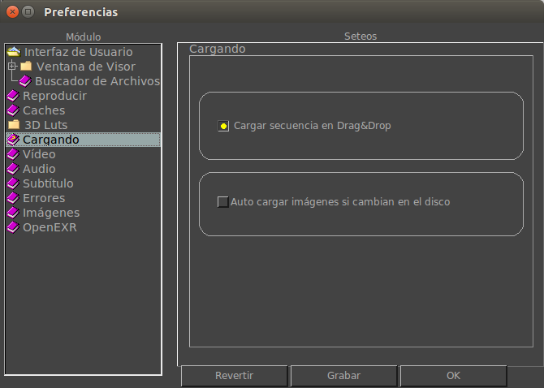

Loading Preferences
The Loading Preferences tab allows you to configure how the image, video and audio is loaded.

Auto Reload
With Auto Reload on, mrViewer will automatically reload images or movie files if they change on disk.